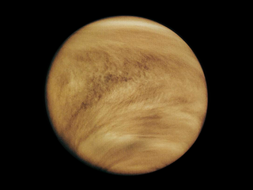

The Sun—the heart of our solar system—is a yellow dwarf star, a hot ball of glowing gases. Its gravity holds the solar system together, keeping everything from the biggest planets to the smallest particles of debris in its orbit. Electric currents in the Sun generate a magnetic field that is carried out through the solar system by the solar wind—a stream of electrically charged gas blowing outward from the Sun in all directions. The connection and interactions between the Sun and Earth drive the seasons, ocean currents, weather, climate, radiation belts and aurorae. Though it is special to us, there are billions of stars like our Sun scattered across the Milky Way galaxy.

Facts-The Sun is the largest object within our solar system, comprising 99.8% of the system’s mass. The Sun is located at the center of our solar system, and Earth orbits 93 million miles away from it.
There are more planets than stars in our galaxy. The current count orbiting our star is eight The inner, rocky planets are Mercury, Venus, Earth and Mars. The outer planets are gas giants Jupiter and Saturn and ice giants Uranus and Neptune.Beyond Neptune, a newer class of smaller worlds called dwarf planets reign, including longtime favorite Pluto.
The smallest planet in our solar system and nearest to the Sun, Mercury is only slightly larger than Earth's Moon. From the surface of Mercury, the Sun would appear more than three times as large as it does when viewed from Earth, and the sunlight would be as much as seven times brighter. Despite its proximity to the Sun, Mercury is not the hottest planet in our solar system – that title belongs to nearby Venus, thanks to its dense atmosphere.

Facts-The smallest and fastest planet, it zips around the Sun in only 88 Earth days.
Second planet from the Sun and our closest planetary neighbor, Venus is similar in structure and size to Earth, but it is now a very different world. Venus spins slowly in the opposite direction most planets do. Its thick atmosphere traps heat in a runaway greenhouse effect, making it the hottest planet in our solar system—with surface temperatures hot enough to melt lead. Glimpses below the clouds reveal volcanoes and deformed mountains.
Facts-Venus’ thick atmosphere makes it the hottest planet in our solar system.
Our home planet is the third planet from the Sun, and the only place we know of so far that’s inhabited by living things.While Earth is only the fifth largest planet in the solar system, it is the only world in our solar system with liquid water on the surface. Just slightly larger than nearby Venus, Earth is the biggest of the four planets closest to the Sun, all of which are made of rock and metal. The name Earth is at least 1,000 years old. All of the planets, except for Earth, were named after Greek and Roman gods and goddesses. However, the name Earth is a Germanic word, which simply means “the ground.”

Facts-The only planet in our solar system with liquid water on the surface.
The fourth planet from the Sun, Mars is a dusty, cold, desert world with a very thin atmosphere.This dynamic planet has seasons, polar ice caps and extinct volcanoes,evidence it was once an even more active past.Mars is one of the most explored bodies in our solar system, and it's the only planet where we've sent rovers to roam the alien landscape.India and ESA also have spacecraft in orbit above Mars.These robotic explorers have found lots of evidence that Mars was much wetter and warmer, with a thicker atmosphere, billions of years ago.

Facts-Mars was a wet and warm planet billions of years ago.
Jupiter has a long history surprising scientists—all the way back to 1610 when Galileo Galilei found the first moons beyond Earth. That discovery changed the way we see the universe. Fifth in line from the Sun, Jupiter is, by far, the largest planet in the solar system – more than twice as massive as all the other planets combined.Jupiter's familiar stripes and swirls are actually cold, windy clouds of ammonia and water, floating in an atmosphere of hydrogen and helium. Jupiter’s iconic Great Red Spot is a giant storm bigger than Earth that has raged for hundreds of years.

Facts-The largest planet, its dark red spot is a storm larger than Earth.
Saturn is the sixth planet from the Sun and the second largest planet in our solar system.Adorned with thousands of beautiful ringlets, Saturn is unique among the planets. It is not the only planet to have rings—made of chunks of ice and rock—but none are as spectacular or as complicated as Saturn's.Like fellow gas giant Jupiter, Saturn is a massive ball made mostly of hydrogen and helium.

Facts- Saturn has the brightest, most massive and most complex ring system of any planet.
The first planet found with the aid of a telescope, Uranus was discovered in 1781 by astronomer William Herschel, although he originally thought it was either a comet or a star. It was two years later that the object was universally accepted as a new planet, in part because of observations by astronomer Johann Elert Bode. Herschel tried unsuccessfully to name his discovery Georgium Sidus after King George III. Instead the scientific community accepted Bode's suggestion to name it Uranus, the Greek god of the sky, as suggested by Bode.

Facts- Uranus is tipped on its axis by almost 90-degrees.
Dark, cold and whipped by supersonic winds, ice giant Neptune is the eighth and most distant planet in our solar system. More than 30 times as far from the Sun as Earth, Neptune is the only planet in our solar system not visible to the naked eye and the first predicted by mathematics before its discovery. In 2011 Neptune completed its first 165-year orbit since its discovery in 1846. NASA's Voyager 2 is the only spacecraft to have visited Neptune up close.

Facts-Neptune was the first planet discovered through mathematical calculations, rather than observation.
| Planet | Rotation Period | Revolution Period |
| Mercury | 58.6 days | 87.97 days |
| Venus | 243 days | 224.7 days |
| Earth | 0.99 days | 365.26 days |
| Mars | 1.03 days | 1.88 years |
| Jupiter | 0.41 days | 11.86 years |
| Saturn | 0.45 days | 29.46 years |
| Uranus | 0.72 days | 84.01 years |
| Neptune | 0.67 days | 164.79 years |
| Pluto | 6.39 days | 248.59 years |
There are currently five planets classified as dwarf planets: Ceres, Pluto, Makemake, Haumea and Eris. Except for Ceres, which lies in the main asteroid belt, these small planets are located in the Kuiper Belt. They’re considered dwarfs because they are massive, round, and orbit the Sun, but haven't cleared their orbital path.

Pluto is a dwarf planet that lies in the Kuiper Belt, an area full of icy bodies and other dwarf planets out past Neptune. Pluto is very small, only about half the width of the United States and its biggest moon Charon is about half the size of Pluto. Almost all the planets travel around the Sun in nearly perfect circles. But not Pluto. It takes an oval-shaped path with the Sun nowhere near its center. What's more, its path is quite tilted compared to the planets.
Facts-Pluto is only about 1,400 miles wide. At that small size, Pluto is only about half the width of the United States. Pluto is about 3.6 billion miles away from the Sun and has five moons.
Eris was discovered on Oct. 21, 2003 by M.E. Brown, C.A. Trujillo, and D. Rabinowitz at the Palomar Observatory. With a radius of about 722 miles (1,163 kilometers), Eris is about 1/5 the radius of Earth. Eris, like Pluto, is a little smaller than Earth's Moon. If the Earth were the size of a nickel, Eris would be about as big as a popcorn kernel. From an average distance of 6,289,000,000 miles (10,125,000,000 kilometers), Eris is about 68 astronomical units away from the Sun. One astronomical unit (abbreviated as AU), is the distance from the Sun to Earth.
Earth's Moon is the only place beyond Earth where humans have set foot. The brightest and largest object in our night sky, the Moon makes Earth a more livable planet by moderating our home planet's wobble on its axis, leading to a relatively stable climate. It also causes tides, creating a rhythm that has guided humans for thousands of years. The Moon was likely formed after a Mars-sized body collided with Earth.

The Moon is Earth’s only natural satellite and the fifth largest moon in the solar system.
Planets and asteroids in our solar system orbit the Sun. Moons — also known as natural satellites — orbit planets and asteroids. There are more than 200 moons in our solar system. Most orbit the giant planets — with Saturn and Jupiter leading moon counts — but even smaller worlds like Pluto can have five moons in orbit. Moons come in many shapes, sizes and types. Most are airless, but a few have atmospheres and even hidden oceans. There are dozens of moons in our solar system — even a few asteroids have small companion moons.
Mars was a wet and warm planet billions of years ago.
Asteroids, sometimes called minor planets, are rocky, airless remnants left over from the early formation of our solar system about 4.6 billion years ago. The current known asteroid count is: 992,205. Most of this ancient space rubble can be found orbiting the Sun between Mars and Jupiter within the main asteroid belt. Asteroids range in size from Vesta — the largest at about 329 miles (530 kilometers) in diameter — to bodies that are less than 33 feet (10 meters) across. The total mass of all the asteroids combined is less than that of Earth's Moon.

Mars was a wet and warm planet billions of years ago.
Comets are frozen leftovers from the formation of the solar system composed of dust, rock and ices. They range from a few miles to tens of miles wide, but as they orbit closer to the sun, they heat up and spew gases and dust into a glowing head that can be larger than a planet. This material forms a tail that stretches millions of miles. There are likely billions of comets orbiting our Sun in the Kuiper Belt and even more distant Oort Cloud.

Mars was a wet and warm planet billions of years ago.
When meteoroids enter Earth’s atmosphere (or that of another planet, like Mars) at high speed and burn up, the fireballs or “shooting stars” are called meteors.

When a meteoroid survives a trip through the atmosphere and hits the ground, it’s called a meteorite
Meteoroids are objects in space that range in size from dust grains to small asteroids. Think of them as “space rocks."
NASA's twin Voyager probes – Voyager 1 and Voyager 2- were launched in 1977 to explore the outer planets in our solar system. Voyager 2 launched on Aug. 20, 1977, and Voyager 1 launched about two weeks later, on Sept. 5. Since then, the spacecraft have been traveling along different flight paths and at different speeds. Voyager 1 passed the boundary of interstellar space in 2012, while Voyager 2 is in the outer reaches of the solar system.


The solar system sits far from the galactic core (almost 30,000 light-years), between two spiral arms. More so, the solar system's circular orbit helps it avoid that dangerous part of the galaxy. The galactic core likely contains a massive black hole and releases consistent bursts of radiation.

Fact-The Earth's Cosmic Address-The Solar System, Orion Arm, The Milky Way, Local Group, Virgo Cluster, Virgo Super-Cluster, Universe